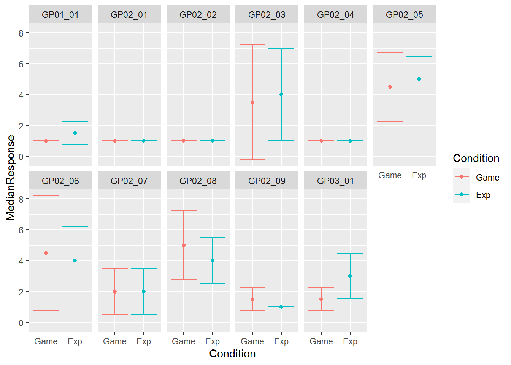
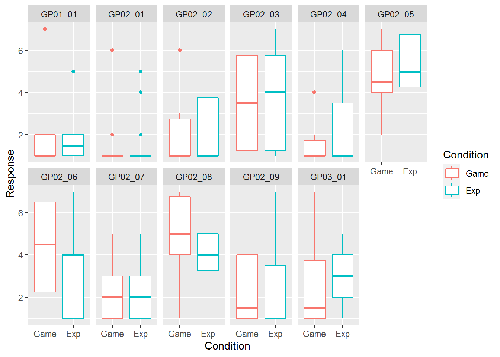

Seminar 9 Tidyng your data
It is fun to work with tidy complete data. Unfortunately, more often than not you will need to preprocess and tidy it up before you can process it. Tidyverse has tidyr package that helps you with some of the problems. Grab the exercise notebook and let’s get started.
9.1 Pivoting between long and wide format
Recall the idea of tidy data:
- variables are in columns,
- observations are in rows,
- values are in cells.
And, also recall, that quite often data is stored in a wide format that is easier for humans read.
| Participant | Face | Symmetry | Attractiveness | Trustworthiness |
|---|---|---|---|---|
| 1 | M-1 | 6 | 4 | 3 |
| 1 | M-2 | 4 | 7 | 6 |
| 2 | M-1 | 5 | 2 | 1 |
| 2 | M-2 | 3 | 7 | 2 |
Here, Symmetry, Attractiveness, Trustworthiness are different face properties participants responded on, whereas values are Response they gave. You can work with a table like that but it is often more convenient to have instead a column Property that will code which face property participants respond on and a column Response to hold values. Then, you can easily split or group your data by property while performing the same analysis on all of them.
The function to do this is pivot_longer(). It takes a table, which you can pipe to the function and vector of column names that need to be transformed. All column names go to one new column and all the values go to another new column. Defaults names of these two columns are, respectively, "name" and "value" but you can specify something more suitable via, respectively, names_to and values_to parameters. Another
There are many more bells-and-whistles (name and value transformations, removing a prefix via regular expressions, etc.), so recommend looking at the manual and a vignette. However, in most cases these for parameters will be all you need, so let us see pivot_longer in action.
I assume that table presented above is in widish_df table. The columns that we want to transform are Symmetry, Attractiveness, Trustworthiness. Thus, the simplest call with all defaults is
tidyr::pivot_longer(widish_df,
cols=c("Symmetry", "Attractiveness", "Trustworthiness"))| Participant | Face | name | value |
|---|---|---|---|
| 1 | M-1 | Symmetry | 6 |
| 1 | M-1 | Attractiveness | 4 |
| 1 | M-1 | Trustworthiness | 3 |
| 1 | M-2 | Symmetry | 4 |
| 1 | M-2 | Attractiveness | 7 |
| 1 | M-2 | Trustworthiness | 6 |
| 2 | M-1 | Symmetry | 5 |
| 2 | M-1 | Attractiveness | 2 |
| 2 | M-1 | Trustworthiness | 1 |
| 2 | M-2 | Symmetry | 3 |
| 2 | M-2 | Attractiveness | 7 |
| 2 | M-2 | Trustworthiness | 2 |
When you compare the two tables, you will see that original three columns × four rows are now stretched into twelve rows and name-value pairs are consistent across the two tables47. As noted above, you can use better names for new columns (I use head() function to show only first 4 rows to save space, because data is the same):
longish_df <-
tidyr::pivot_longer(widish_df,
cols=c("Symmetry", "Attractiveness", "Trustworthiness"),
names_to="Property",
values_to="Response")
head(longish_df, 4)| Participant | Face | Property | Response |
|---|---|---|---|
| 1 | M-1 | Symmetry | 6 |
| 1 | M-1 | Attractiveness | 4 |
| 1 | M-1 | Trustworthiness | 3 |
| 1 | M-2 | Symmetry | 4 |
You also can go from long to wide representation via pivot_wider() function. The logic is reverse, you need to specify which columns identify different rows that belong together (that one is optional), which columns contain column names and which contain their values. For our example table the names of the columns are in the column Property and values are in Response. But what about columns that identify the rows that belong together? In our case, these are Participant and Face, so all rows from a long table that have same combination of Participant and Face values should be merged together into a single row. If you do not explicitly specify id_cols, then by default, all other remaining columns are used to identify which rows belong together. This is irrelevant in this toy example, as Participant and Face is all we have left anyhow but I will show you how things can get confusing and how to overcome this below.
So, let us undo our previous wide-to-long transformation48
longish_df %>%
pivot_wider(names_from = "Property", values_from="Response")| Participant | Face | Symmetry | Attractiveness | Trustworthiness |
|---|---|---|---|---|
| 1 | M-1 | 6 | 4 | 3 |
| 1 | M-2 | 4 | 7 | 6 |
| 2 | M-1 | 5 | 2 | 1 |
| 2 | M-2 | 3 | 7 | 2 |
And our original wide table is back!
Now let us take a look at the importance of id_cols. Imagine that we have another column, say, response times. So, our long table will look like this
| Participant | Face | Property | Response | RT |
|---|---|---|---|---|
| 1 | M-1 | Symmetry | 6 | 1.64 |
| 1 | M-1 | Attractiveness | 4 | 1.58 |
| 1 | M-1 | Trustworthiness | 3 | 1.98 |
| 1 | M-2 | Symmetry | 4 | 0.36 |
Now, if we do not specify which columns identify rows that belong together, RT will be used as well. But, because it is different for every response, each row in the original table will be unique. Now we have a weird looking table
longish_df_rt %>%
pivot_wider(names_from = "Property", values_from="Response")longish_df_rt %>%
pivot_wider(names_from = "Property", values_from="Response") %>%
head(4) %>%
knitr::kable()| Participant | Face | RT | Symmetry | Attractiveness | Trustworthiness |
|---|---|---|---|---|---|
| 1 | M-1 | 1.64 | 6 | NA | NA |
| 1 | M-1 | 1.58 | NA | 4 | NA |
| 1 | M-1 | 1.98 | NA | NA | 3 |
| 1 | M-2 | 0.36 | 4 | NA | NA |
To remedy that, we need to specify id columns explicitly, so that pivot_wider() can ignore and drop the rest:
longish_df_rt %>%
pivot_wider(id_cols = c("Participant", "Face"), names_from = "Property", values_from="Response")longish_df_rt %>%
pivot_wider(id_cols = c("Participant", "Face"), names_from = "Property", values_from="Response") %>%
head(4) %>%
knitr::kable()| Participant | Face | Symmetry | Attractiveness | Trustworthiness |
|---|---|---|---|---|
| 1 | M-1 | 6 | 4 | 3 |
| 1 | M-2 | 4 | 7 | 6 |
| 2 | M-1 | 5 | 2 | 1 |
| 2 | M-2 | 3 | 7 | 2 |
As pivot_longer, pivot_wider has plenty of parameters to fine-tune pivoting, so you should check them to know what it can do.
9.2 Practice pivoting longer
Let us put this new knowledge to practice, using GP.csv file. These is a questionnaire on gaming habits, which was conducted prior to an experiment to check whether two groups of participants assigned to Game and Experiment conditions have similar gaming habits. We would like to visually inspect responses to individual items in a questionnaire appear for different conditions, as this will tell us whether we should expect a difference. Split the computations below into two pipelines. One that loads and pre-processes the data (steps 1-3). Another one that produces a summary and stores it into a different table (step 4). Advice, implement it one step at a time, checking the table and making sure that you get expected results before piping it and adding the next operation.
- Read the file, make sure you specify column types.
- Convert
Conditioncolumn to a factor with1corresponding to"Game"and2to"Exp". - Pivot all
GP..columns. You should get a table with five columns:Respondent,Condition,Gender,name(or a column name that you specified), andvalue(or a column name that you specified). Hint, you can use slicing:to specify the range of columns or starts_with() function to specify a common prefix. Try both approaches. - Group data by condition and GP item and compute median and median absolute deviation of responses. These are robust versions of mean and standard deviation, better suitable for data with potential outliers.
You first table, in long format, should look like this (I show only first four rows)
| Respondent | Condition | Gender | Item | Response |
|---|---|---|---|---|
| SBS1992w | Game | 1 | GP01_01 | 1 |
| SBS1992w | Game | 1 | GP02_01 | 1 |
| SBS1992w | Game | 1 | GP02_02 | 1 |
| SBS1992w | Game | 1 | GP02_03 | 3 |
And your second table, with aggregated results, show be like this
| Condition | Item | MedianResponse | ResponseMAD |
|---|---|---|---|
| Game | GP01_01 | 1.0 | 0.0000 |
| Game | GP02_01 | 1.0 | 0.0000 |
| Game | GP02_02 | 1.0 | 0.0000 |
| Game | GP02_03 | 3.5 | 3.7065 |
Now you have a table that has median and MAD values for each combination and item. Plot them to compare them visually. Use median responses for y-value of points and median±MAD for error bars. Use facets and color to make it easier to identify the items and conditions. My take on the plot is below, do you think we should expect to find difference between the conditions? 
Do exercise 1.
Perform similar analysis but do not group data and summarize the data. Instead, use box plots to show the variability. Which visualization do you prefer?

Do exercise 2.
9.3 Practice pivoting wider
Let us take adaptation data and turn it onto a wide format that is easier for humans to read. In the original form, the table is a long format with a row for each pair of prime and probe stimuli.
| Participant | Prime | Probe | Nsame | Ntotal |
|---|---|---|---|---|
| ma2 | Sphere | Sphere | 22 | 119 |
| ma2 | Sphere | Quadro | 23 | 118 |
| ma2 | Sphere | Dual | 15 | 120 |
| ma2 | Sphere | Single | 31 | 115 |
Let us turn it into a wider table, so that a single row corresponds to a single prime and four new column contain proportion of same responses for individual probes. The table will look like this (use round() function to reduce the number of digits):
| Participant | Prime | Sphere | Quadro | Dual | Single | Average |
|---|---|---|---|---|---|---|
| ma2 | Sphere | 0.18 | 0.19 | 0.12 | 0.27 | 0.1900 |
| ma2 | Quadro | 0.21 | 0.22 | 0.14 | 0.34 | 0.2275 |
| ma2 | Dual | 0.25 | 0.30 | 0.27 | 0.48 | 0.3250 |
| ma2 | Single | 0.34 | 0.30 | 0.48 | 0.39 | 0.3775 |
The overall procedure is fairly straightforward:
- Read the file (don’t forget to specify column types)
- Computer
Psameproportion of same responses given number of total responses. - Pivot the table wider, think about your id columns. Also try without specifying any and see what you get.
- Compute an average stability across all probes and put it into a new
Averagecolumn. You can do it “by hand” but, instead, use rowSums() to compute it. Here, use.to refer to the table inside themutate()function and you will need to normalize it by the number of probes to get an average instead of the sum. - Pipe it to the output, using knitr::kable().
Do exercise 3.
Let us practice more and create group average summary as a square 5×4 table with a single row per Prime and four columns for Probe plus a column that says which prime the row corresponds to. As a value for each cell, we want to code median ± MAD. The table should look like this:
| Prime | Sphere | Quadro | Dual | Single |
|---|---|---|---|---|
| Sphere | 0.13 ± 0.06 | 0.13 ± 0.04 | 0.17 ± 0.1 | 0.32 ± 0.08 |
| Quadro | 0.19 ± 0.07 | 0.12 ± 0.12 | 0.21 ± 0.19 | 0.38 ± 0.07 |
| Dual | 0.15 ± 0.15 | 0.3 ± 0.14 | 0.27 ± 0.15 | 0.48 ± 0.16 |
| Single | 0.34 ± 0.18 | 0.3 ± 0.2 | 0.48 ± 0.12 | 0.51 ± 0.18 |
You know everything you need, so think about how you would implement this as a single pipeline. Hints: to match my table you will definitely to convert Prime and Probe to factors to ensure consistent ordering (otherwise, they will be sorted alphabetically), you will need to use glue in combination with round() to form the summary info or you can use sprintf. And, of course, you will need to pivot the table wider.
Do exercise 4.
9.4 Extracting information from a string
Quite often, a string value is a code to contains several different pieces of information. For example, in the toy table on face perception, we have been working with, Face column code gender of the face "M" (table is short but you can easily assume that faces of both genders were used) and the second is its index (1 and 2). When we worked with persistence, Participant column encoded year of birth and gender, whereas Session contained detailed information about year, month, day, hour, minutes, and seconds all merged together. There are several ways to extract this information, either via separate() function, discussed below, or via extract() function or using string processing library stringr.
9.5 Separate
Use of separate() functions is generally straightforward: you pass the name of the column that you want to split, names of the columns it needs to be split into, a separator symbol or indexes of splitting positions. Examples using the face table should make it clear. Reminder, this is the original wide table and we want to separate Face into FaceGender and FaceIndex.
widish_df %>%
knitr::kable()| Participant | Face | Symmetry | Attractiveness | Trustworthiness |
|---|---|---|---|---|
| 1 | M-1 | 6 | 4 | 3 |
| 1 | M-2 | 4 | 7 | 6 |
| 2 | M-1 | 5 | 2 | 1 |
| 2 | M-2 | 3 | 7 | 2 |
As there is a very convenient “dash” between the two, we can use it for a separator symbol:
widish_df %>%
separate(Face, into=c("FaceGender", "FaceIndex"), sep="-")| Participant | FaceGender | FaceIndex | Symmetry | Attractiveness | Trustworthiness |
|---|---|---|---|---|---|
| 1 | M | 1 | 6 | 4 | 3 |
| 1 | M | 2 | 4 | 7 | 6 |
| 2 | M | 1 | 5 | 2 | 1 |
| 2 | M | 2 | 3 | 7 | 2 |
Note that the original Face column is gone. We can keep it via remove=FALSE option
widish_df %>%
separate(Face, into=c("FaceGender", "FaceIndex"), sep="-", remove=FALSE)| Participant | Face | FaceGender | FaceIndex | Symmetry | Attractiveness | Trustworthiness |
|---|---|---|---|---|---|---|
| 1 | M-1 | M | 1 | 6 | 4 | 3 |
| 1 | M-2 | M | 2 | 4 | 7 | 6 |
| 2 | M-1 | M | 1 | 5 | 2 | 1 |
| 2 | M-2 | M | 2 | 3 | 7 | 2 |
We also do not need to extract all information. For example, we can extract only face gender or face index. To get only the gender, we only specify one into column and add extra="drop" parameter, telling separate() to drop any extra piece it obtained:
widish_df %>%
separate(Face, into=c("Gender"), sep="-", remove=FALSE, extra="drop")| Participant | Face | Gender | Symmetry | Attractiveness | Trustworthiness |
|---|---|---|---|---|---|
| 1 | M-1 | M | 6 | 4 | 3 |
| 1 | M-2 | M | 4 | 7 | 6 |
| 2 | M-1 | M | 5 | 2 | 1 |
| 2 | M-2 | M | 3 | 7 | 2 |
Alternatively, we can explicitly ignore pieces by using NA for their column name:
widish_df %>%
separate(Face, into=c("Gender", NA), sep="-", remove=FALSE)widish_df %>%
separate(Face, into=c("Gender", NA), sep="-", remove=FALSE) %>%
knitr::kable()| Participant | Face | Gender | Symmetry | Attractiveness | Trustworthiness |
|---|---|---|---|---|---|
| 1 | M-1 | M | 6 | 4 | 3 |
| 1 | M-2 | M | 4 | 7 | 6 |
| 2 | M-1 | M | 5 | 2 | 1 |
| 2 | M-2 | M | 3 | 7 | 2 |
What about keeping only the second piece in a FaceIndex column? We ignore the first one via NA
widish_df %>%
separate(Face, into=c(NA, "Index"), sep="-", remove=FALSE)widish_df %>%
separate(Face, into=c(NA, "Index"), sep="-", remove=FALSE) %>%
knitr::kable()| Participant | Face | Index | Symmetry | Attractiveness | Trustworthiness |
|---|---|---|---|---|---|
| 1 | M-1 | 1 | 6 | 4 | 3 |
| 1 | M-2 | 2 | 4 | 7 | 6 |
| 2 | M-1 | 1 | 5 | 2 | 1 |
| 2 | M-2 | 2 | 3 | 7 | 2 |
Let’s practice. Use separate() to preprocess persistence data and create two new columns for hour and minutes from Session column. Do it in a single pipeline, starting with reading the file. You results should look like this, think about columns that are drop or keep (this is only first four rows, think of how you can limit your output the same way via head() function):
| Participant | Hour | Minutes | Block | Trial | OnsetDelay | Bias | Prime | Probe | Response1 | Response2 | RT1 | RT2 |
|---|---|---|---|---|---|---|---|---|---|---|---|---|
| AKM1995M | 14 | 07 | 1 | 0 | 0.5051354 | right | stripes-4 | heavy poles sphere | right | right | 0.4606155 | 0.3198615 |
| AKM1995M | 14 | 07 | 1 | 1 | 0.6669318 | left | stripes-2 | stripes-8 | right | right | 0.2739671 | 0.3598261 |
| AKM1995M | 14 | 07 | 1 | 2 | 0.6043307 | right | stripes-2 | stripes-2 | right | right | 0.4715643 | 0.3277184 |
| AKM1995M | 14 | 07 | 1 | 3 | 0.5574895 | right | stripes-8 | stripes-4 | right | right | 0.2636357 | 0.3036911 |
Do exercise 5.
As noted above, if position of individual pieces is fixed, you can specify it explicitly. Let us make out toy table a bit more explicit
| Participant | Face | Symmetry | Attractiveness | Trustworthiness |
|---|---|---|---|---|
| 1 | Female-01 | 6 | 4 | 3 |
| 1 | Female-02 | 4 | 7 | 6 |
| 2 | Female-01 | 5 | 2 | 1 |
| 2 | Female-02 | 3 | 7 | 2 |
For our toy faces table, the first piece is the gender and the last one is its index. Thus, we tell separate() starting position each pieces, starting with the second one:
widish_df %>%
separate(Face, into=c("FaceGender", "Dash", "FaceIndex"), sep=c(6, 7))widish_df %>%
separate(Face, into=c("FaceGender", "Dash", "FaceIndex"), sep=c(6, 7), remove=FALSE) %>%
knitr::kable()| Participant | Face | FaceGender | Dash | FaceIndex | Symmetry | Attractiveness | Trustworthiness |
|---|---|---|---|---|---|---|---|
| 1 | Female-01 | Female | - | 01 | 6 | 4 | 3 |
| 1 | Female-02 | Female | - | 02 | 4 | 7 | 6 |
| 2 | Female-01 | Female | - | 01 | 5 | 2 | 1 |
| 2 | Female-02 | Female | - | 02 | 3 | 7 | 2 |
Here, I’ve create Dash column for the separator but, of course, I could have omitted it via NA column name.
widish_df %>%
separate(Face, into=c("FaceGender", NA, "FaceIndex"), sep=c(4, 5))widish_df %>%
separate(Face, into=c("FaceGender", NA, "FaceIndex"), sep=c(6, 7)) %>%
knitr::kable()| Participant | FaceGender | FaceIndex | Symmetry | Attractiveness | Trustworthiness |
|---|---|---|---|---|---|
| 1 | Female | 01 | 6 | 4 | 3 |
| 1 | Female | 02 | 4 | 7 | 6 |
| 2 | Female | 01 | 5 | 2 | 1 |
| 2 | Female | 02 | 3 | 7 | 2 |
Practice time! Using same persistence data extract birth year and gender of participants from Participant code (keep the code though!). Put a nice extra touch by converting year to a number and gender into a factor type. Here is how should look like:
| Participant | BirthYear | Gender | Session | Block | Trial | OnsetDelay | Bias | Prime | Probe | Response1 | Response2 | RT1 | RT2 |
|---|---|---|---|---|---|---|---|---|---|---|---|---|---|
| AKM1995M | 1995 | Female | 2019-06-12-14-07-17 | 1 | 0 | 0.5051354 | right | stripes-4 | heavy poles sphere | right | right | 0.4606155 | 0.3198615 |
| AKM1995M | 1995 | Female | 2019-06-12-14-07-17 | 1 | 1 | 0.6669318 | left | stripes-2 | stripes-8 | right | right | 0.2739671 | 0.3598261 |
| AKM1995M | 1995 | Female | 2019-06-12-14-07-17 | 1 | 2 | 0.6043307 | right | stripes-2 | stripes-2 | right | right | 0.4715643 | 0.3277184 |
| AKM1995M | 1995 | Female | 2019-06-12-14-07-17 | 1 | 3 | 0.5574895 | right | stripes-8 | stripes-4 | right | right | 0.2636357 | 0.3036911 |
Do exercise 6.
9.6 Missing data
Sometimes data is missing. It can be missing explicitly with NA standing for Not Available / Missing data. Or, it can be missing implicitly when there is simply no entry for a particular condition. In the latter case, the strategy is to make missing values explicit first (discussed below). When you have missing values, represented by NA in R, you must decide how to deal with them: you can use this information directly as missing data can be diagnostic in itself, you can impute it using either a sophisticated statistical methods or via a simple average/default value strategy, or you can exclude them from the analysis.
To make implicit missing data explicit, tidyr provides function complete() that figures out all combinations of values for columns that you specified, finds missing combinations and adds with using NA or a specified default value. Imagine our toy table was incomplete (no data for Participant 1 and Face Female-02)
| Participant | Face | Symmetry | Attractiveness | Trustworthiness |
|---|---|---|---|---|
| 1 | Female-01 | 6 | 4 | 3 |
| 1 | Female-02 | 4 | 7 | 6 |
| 2 | Female-01 | 5 | 2 | 1 |
We can complete that table
incomplete_df %>%
complete(Participant, Face)| Participant | Face | Symmetry | Attractiveness | Trustworthiness |
|---|---|---|---|---|
| 1 | Female-01 | 6 | 4 | 3 |
| 1 | Female-02 | 4 | 7 | 6 |
| 2 | Female-01 | 5 | 2 | 1 |
| 2 | Female-02 | NA | NA | NA |
We could also supply default values via fill parameter that takes a named list49 list(column_name = default_value):
| Participant | Face | Symmetry | Attractiveness | Trustworthiness |
|---|---|---|---|---|
| 1 | Female-01 | 6 | 4 | 3 |
| 1 | Female-02 | 4 | 7 | 6 |
| 2 | Female-01 | 5 | 2 | 1 |
| 2 | Female-02 | 0 | 0 | NA |
There are two approaches on excluding missing values. You can exclude all incomplete rows which have missing values in any variable via na.omit() (base R function) or drop_na() (tidyr package function). Or you can exclude rows only if they have NA in a specific columns by specifying their names.
For a table you see below
| Participant | Face | Symmetry | Attractiveness | Trustworthiness |
|---|---|---|---|---|
| 1 | M-1 | 6 | NA | 3 |
| 1 | M-2 | NA | 7 | NA |
| 2 | M-1 | 5 | 2 | 1 |
| 2 | M-2 | 3 | 7 | 2 |
First, we can ensure only complete cases
na.omit(widish_df_with_NA)| Participant | Face | Symmetry | Attractiveness | Trustworthiness |
|---|---|---|---|---|
| 2 | M-1 | 5 | 2 | 1 |
| 2 | M-2 | 3 | 7 | 2 |
widish_df_with_NA %>%
drop_na()| Participant | Face | Symmetry | Attractiveness | Trustworthiness |
|---|---|---|---|---|
| 2 | M-1 | 5 | 2 | 1 |
| 2 | M-2 | 3 | 7 | 2 |
Second, we drop rows only if Attractiveness data is missing.
widish_df_with_NA %>%
drop_na(Attractiveness)| Participant | Face | Symmetry | Attractiveness | Trustworthiness |
|---|---|---|---|---|
| 1 | M-2 | NA | 7 | NA |
| 2 | M-1 | 5 | 2 | 1 |
| 2 | M-2 | 3 | 7 | 2 |
Practice time. Create you own table with missing values and exclude missing values using na.omit() and na_drop().
Do exercise 7.
na_drop is a very convenient function but you can replicate it functionality using is.na() in combination with filter dplyr function or logical indexing. Implement code that excludes rows if they contain NA in a specific column using these two approaches.
Do exercise 8.
Now, implement code that uses logical indexing as a function that takes data.frame (table) as a first argument and name a of a single column as a second, filters out rows with NA in that column and return the table back.
Do exercise 9.
As noted above, you can also impute values. The simplest strategy is to use either a fixed or an average (mean, median, etc.) value. tidyr function that performs a simple substitution is replace_na()50 and, as a second parameter, it takes a named list of values list(column_name = value_for_NA). For our toy table, we can replace missing Attractiveness and Symmetry values with some default value, e.g. 0 and -1 (this is very arbitrary, just to demonstrate how it works!)
widish_df_with_NA %>%
replace_na(list(Attractiveness = 0, Symmetry = -1)) %>%
knitr::kable()| Participant | Face | Symmetry | Attractiveness | Trustworthiness |
|---|---|---|---|---|
| 1 | M-1 | 6 | 0 | 3 |
| 1 | M-2 | -1 | 7 | NA |
| 2 | M-1 | 5 | 2 | 1 |
| 2 | M-2 | 3 | 7 | 2 |
Unfortunately, replace_na() works only with constant values and does not handle grouped tables very well51 So to replace an NA with a mean value of a grouped data, we need to combine some of our old knowledge with an ifelse(conditon, value_if_true, value_if_false) function. Here is how it works to replace all negative values in a vector with a 0 and all non-negative with 1:
v <- c(-1, 3, 5, -2, 5)
ifelse(v < 0, 0, 1)## [1] 0 1 1 0 1It works per element and you can use original values themselves. Here is how to replace only negative values but keep the positive ones:
v <- c(-1, 3, 5, -2, 5)
ifelse(v < 0, 0, v)## [1] 0 3 5 0 5We, essentially, tell the function, “if the condition is false, use the original value.” Now, your turn! Using the same vector and ifelse() function, replace negative values with a maximal value of the vector. I know it is 5 but you cannot hardcode it, that’s the point of the exercise!
Do exercise 10.
Now that you know how to use ifelse(), replacing NA with a mean will be (relatively) easy. Use adaptation_with_na table and replace missing information using participant-specific mean. This is the same table as above, so you need to compute Psame first. However, missing values in Nsame and Ntotal will result in NA for a corresponding Psame. Replace them with mean Psame per participant. This will require knowledge of additional details. First, you can compute mean() ignoring any NA using na.rm parameter. Second, you will need to use is.na() to detect values that you need to replace with the mean. Third, reminder, in order to apply some function per participant (stimulus, etc.), you need to first group your data. This entire computation should be implemented as a single pipeline.
This is how the original table with missing values looks like (arranged by Prime and Probe)
| Participant | Prime | Probe | Nsame | Ntotal | Psame |
|---|---|---|---|---|---|
| ma2 | Dual | Dual | 32 | 120 | 0.2666667 |
| sp2 | Dual | Dual | NA | 120 | NA |
| ma2 | Dual | Quadro | NA | 116 | NA |
| sp2 | Dual | Quadro | 9 | 120 | 0.0750000 |
And here is the same table with imputed participant mean (I show it in a separate column just so you can see when it has been imputed)
| Participant | Prime | Probe | Nsame | Ntotal | Psame | Pavg |
|---|---|---|---|---|---|---|
| ma2 | Dual | Dual | 32 | 120 | 0.2666667 | 0.3223209 |
| sp2 | Dual | Dual | NA | 120 | 0.2120287 | 0.2120287 |
| ma2 | Dual | Quadro | NA | 116 | 0.3223209 | 0.3223209 |
| sp2 | Dual | Quadro | 9 | 120 | 0.0750000 | 0.2120287 |
Do exercise 11.
Great work!
By the way, this simple math check may seem as a trivial point but this is a kind of simple sanity check that you should perform routinely. This way you know rather than hope that transformation did what it should. I also check value is a few rows to make sure that I didn’t mess things up. Catching simple errors early saves you a lot of time!↩︎
I used table as an explicit first argument for
pivot_longer()but piped it topivot_wider(), why? To remind you that these two ways are the interchangeable and that both put the table as a parameter into the function.↩︎Lists are like vectors that you know but they can hold values of any type without auto-converting them.
data.frameis a list, tibble is a list, most of things that are not a vector are lists.↩︎There is also an inverse function na_if() that converts a specific value to an
NA.↩︎At least I wasn’t able to figure out how to do this.↩︎